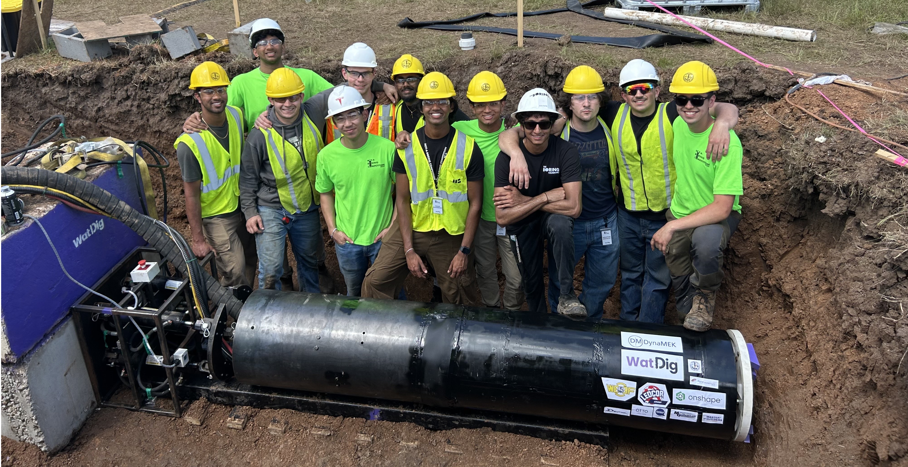

Underground mining has barely changed in 50 years. The machines got bigger, but there is still a person at the face running them. We are building retrofit kits that make the jumbo drills mines already own autonomous, then doing the same for the rest of the drill and blast cycle, until no one needs to be underground.
Manifesto
Robotics is in its demo era. Humanoids folding laundry and models picking cups off a table make good videos, but very few robots are doing real work at scale.
We believe the goal of robotics is to eliminate human labour. A robot is a tool for producing work, and it should be judged on how much work it gets done without a person there.
Mines are already full of machines that do real work every day, like jumbos, bolters, scoops, and charging rigs. They are proven and built for underground, they just need a person to run them. That is why we want to use the existing machines already in the mine, and allow them to produce work on their own.
At The Boring Company the rule was zero people in the tunnel. Two of us worked there alongside ex-miners. When no one is allowed in, every task has to be redesigned so a machine can do it, and the result ends up faster and cheaper because it was never built around a person.
We want to bring that same rule to mining.
Zero people at the face. Then zero people in the heading. Then zero people underground.
How we get there
Most mines can't afford to replace working jumbos with new autonomous ones. So we start with the rig they already run, and add the sensors, perception, and boom control it needs to drill a pattern on its own.
Drilling is one step in the cycle of drill, charge, blast, ventilate, muck, scale, and bolt. After the drill we automate the other machines, then build the software that runs them together, tracking every heading, predicting where the cycle will stall, and dispatching the right machine.
The problem
EVs, batteries, transmission lines, and the data centres behind AI all need copper, lithium, nickel, and rare earths. The IEA expects lithium demand to grow fivefold by 2040 and a 30 percent shortfall in copper supply by 2035 under current policies. A lot of that metal sits in hard rock deposits that can only be mined underground.
SME expects 221,000 US mining workers to retire by 2029, more than half the workforce. Fewer people are coming in than leaving, and a lot of experience is leaving with them.
Mines are already competing for the same small pool of workers, and it takes years to train someone to run a jumbo well. The people who would train them are the ones retiring.
Canada is in the same position. MiHR expects the industry to need about 191,000 hires from 2024 to 2034, and close to a quarter of them will be hard to fill.
New mines don't help much either. It takes 29 years on average to bring a mine from discovery to production in the US, and 27 in Canada, and every new mine needs its own crew. Bigger machines move more rock, but they still need an operator.
Source: S&P Global Market Intelligence, Mine development times: the US in perspective (2024). The US and Canada are the second and third slowest countries in the study.
If there aren't enough people, the only way to produce more is with machines that don't need them. That is why we believe automation is the only real solution.
The deposits that are left are deeper, lower grade, and harder to find. There were 18 major copper discoveries in 1997, fewer than five in most years since 2010, and none in 2023. In Chile the average grade fell by about a third in a decade, so mines have to move more rock for the same copper, and more of it is underground.
Most deaths in underground metal mines come from powered haulage and falls of ground, which are the jobs in the drill and blast cycle. Every task we automate at the face takes a person out of the most dangerous part of the mine.
Source: NIOSH Mine and Mine Worker Charts, occupational fatalities by accident class at underground mining locations, metal operators, 2000 to 2023 (49 deaths). MSHA accident classes.
Since 1995, manufacturing more than doubled its labour productivity while mining's fell by half. McKinsey attributes this to deeper mines, longer hauls, lower grades, and little new technology.
Source: McKinsey & Company, Unearthing a new era of innovation in mining (December 2025), OECD data. Redrawn from the report's exhibit; values approximate. Mining and quarrying includes energy, water supply and waste management in the OECD series. Hover a line for its name.
Sandvik and Epiroc sell automated drilling on their new rigs, but most small and mid-tier mines run older machines without it. On those rigs a person still stands at the face, lines up the boom by eye, drills the pattern, charges it, and backs out for the blast.
We have talked to over a dozen people who run or have run underground operations. The automation the OEMs sell comes with a new multi-million dollar machine, which mid-tier mines running older fleets can't justify.
Most of the autonomy work in mining has focused on the surface, like haul trucks in open pits and drill rigs on benches, where there is GPS and room to move. Underground has had much less attention.
A kit that fits the rigs already on site is the fastest way to get autonomy into mines that can't buy new equipment.
Every kit also collects data on the rock, the rig, and the cycle, and since we don't sell equipment we can work across every brand at the site.
Goals
Our kit on a real jumbo at a real test mine, drilling a full pattern with the operator out of the heading.
Drill, charge, blast, muck, scale, and bolt, with a machine doing each step and a person only supervising.
Software that tracks every heading, catches stalls before they happen, and sends the fleet through the cycle on its own.
Team
We are five mechatronics engineering students at the University of Waterloo. We co-founded WatDIG, Canada's first student TBM team, and have worked at Tesla, The Boring Company, Impossible Metals, Hermeus, Ford, and Clearpath.
At The Boring Company's Not-a-Boring Competition we won the navigation challenge with an autonomous rover that drove through a tunnel with no GPS. The next year we built Canada's first student micro TBM.
Building WatDIG was a lot like starting a company. With a $40k budget and 10 months, we recruited the best engineers we knew at Waterloo and mobilized a team of 30 students, all while in school and on internships. We built a 2 tonne machine with 100,000 lbs of thrust and 6x the torque of a BMW M4, and took it from an empty CAD file to cutting dirt in Texas.
